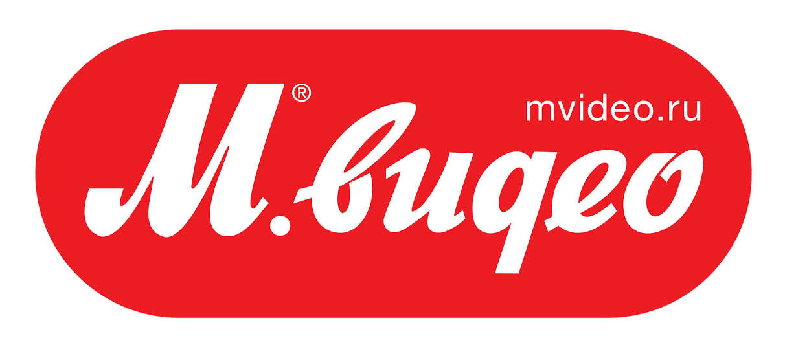
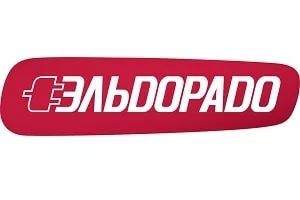
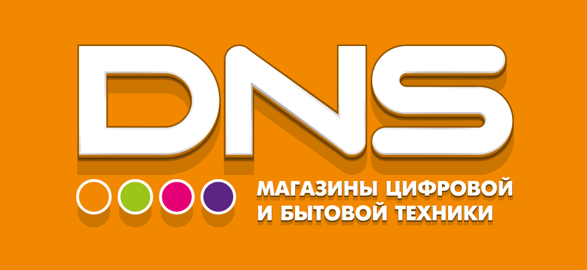
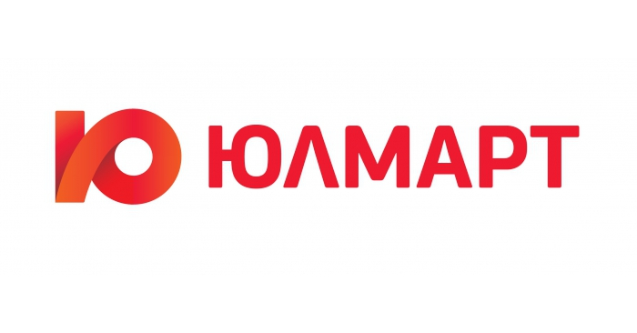
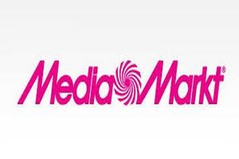
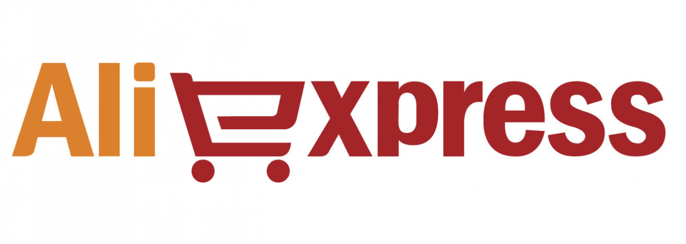
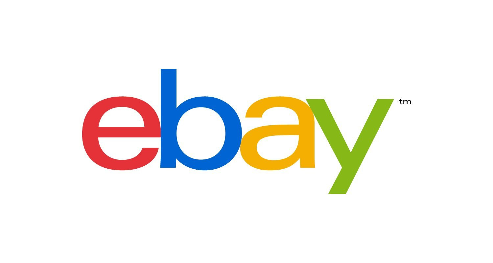

Mвидео
Основана в 1993 году Александром Тынкованом, его братом Михаилом Тынкованом и Павлом Бреевым, когда был открыт первый магазин «Мир Видео» в Москве, на улице Маросейка. В течение 1990-х сеть работала только в Москве. В 2001 году «М.Видео» открыла свой первый магазин в регионе — в Нижнем Новгороде. В 2007 году компания открывает 100-й магазин (в Санкт-Петербурге).
Торговый зал «М.Видео»
4 марта 2010 года в московском гипермаркете «М.Видео» начинает работу розничный магазин Apple Shop. В 2010 году состоялось открытие 200-го магазина (в Новосибирске).
В августе 2012 года в Нижнем Новгороде открыт первый за пределами Москвы интернет-магазин компании. 19 октября 2012 года компания открывает ещё 15 интернет-магазинов. С 2012 года компания объявила, что сосредоточит свои усилия на развитии стратегии Omni-channel: интернет-магазин интегрирован с маркетингом, ассортиментом и ценовой политикой розничной сети. По итогам 2015 года доля интернет-продаж превысила 11 % от оборота.
В 2013 году в Омске состоялось открытие 300-го магазина «М.Видео».
В конце 2014 года компания «М.Видео» запустила креативную кампанию «НИИ Р.А.З.У.М», в рамках которой впервые в своей истории использовала образ знаменитости в рекламной коммуникации. Лицом компании стал телеведущий Александр Пушной, появившийся во всех визуальных коммуникациях: от интернета и outdoor-форматов до телевизионных роликов.
В июне 2016 года открыла самый восточный магазин сети во Владивостоке. Также половина из запланированных на 2016 год выходов «М.Видео» в новые города придется на Дальний Восток.

Эльдорадо
Компания была создана 1 сентября 1994 года (тогда был открыт первый магазин компании в Самаре). В начале 2005 года европейская компания, крупный розничный торговец бытовой техники и электроники Dixons Group plc. получил исключительное право на приобретение контрольного пакета акций «Эльдорадо» до 2011 года. По условиям опциона, цена 100 % акций «Эльдорадо» была установлена в размере $1,9 млрд. В июне 2007 года стало известно, что DSG International отказалась от исполнения опционного соглашения.
С мая 2005 года компания развивала собственную сеть салонов сотовой связи с одноимённым названием (480 салонов связи «Эльдорадо» на начало 2009 года). Планировалось увеличить количество салонов до 490 к концу 2009 года, но в 2009 году в связи с финансовыми затруднениями вся сеть салонов сотовой связи была продана компании МТС.
Первоначально единоличным владельцем компании являлся президент «Эльдорадо» Игорь Яковлев. В начале 2008 года налоговые органы предъявили одному из юридических лиц «Эльдорадо» налоговые претензии на общую сумму почти в 15 млрд руб. После этого банки-кредиторы компании потребовали досрочного погашения кредитов на сумму $400 млн, а поставщики прекратили поставлять товар. «Эльдорадо» выручила чешская группа PPF, предоставив заём в $500 млн. В сентябре 2008 года Яковлев избавился от контрольного пакета «Эльдорадо», продав 39 % акций группы холдингу PPF, а 11 % — итальянской страховой группе Assicurazioni Generali (вместе они получили контрольный пакет — 50 % плюс 1 акция) за сумму порядка $400–800 млн. В декабре 2010 года PPF выкупила долю итальянской компании за €46 млн, получив контрольный пакет. В августе 2011 года чешская компания выкупила остатки «Эльдорадо» у его основателя, заплатив за 50 % минус 1 акцию сети $625 млн.
100% акций группы по данным на август 2011 года принадлежали чешскому холдингу PPF.
В апреле 2013 года представители сети «М.Видео» заявили о готовящемся поглощении сети «Эльдорадо» и направили в Федеральную антимонопольную службу ходатайство о покупке 100 % сети у владельца — чешской PPF Group. В июле 2013 года ФАС разрешила сделку, наложив ограничения на доминирование объединённой сети в ряде регионов.
9 декабря 2016 года компания Сафмар совершила сделку с компанией Группа PPF по приобретению 100% акции. Сумма и условия сделки не разглашаются.
В декабре 2016 года владельцы компании объявили о продаже сети Эльдорадо. 9 декабря 2016 года сделка успешно состоялась. 100% акций перешли семьям Гуцериевых и Шишхановых, владельцам финансовой группы Сафмар.

Днс
Основатели компании в 1990-х годах занимались компьютерным бизнесом: сборкой и продажей ПК, системной интеграцией. В 1998 году после дефолта они решили переориентироваться с обслуживания корпоративных клиентов на розничную торговлю. Была основана компания DNS (Digital Network System) и открыт первый магазин во Владивостоке, в одном из помещений которого велась сборка компьютеров.
С 2005 года компания начинает развивать торговую сеть, открывая свой второй магазин в Находке. В том же году DNS выходит за пределы Приморского края, третий магазин сети появляется в Хабаровске. В 2006 году открывается магазин в Иркутске, в 2007 — магазины в Комсомольске-на-Амуре, Благовещенске, Томске и Абакане. В течение 2008—2009 годов открыты магазины в Чите, Новосибирске, Красноярске, Екатеринбурге, Челябинске, Ростове-на-Дону, Южно-Сахалинске. Одновременно с развитием в новых регионах расширяется уже существующая сеть в регионах присутствия.
В 2010 году филиальная сеть компании состояла из более чем 100 магазинов в 28 городах России, в которых было занято более 1,5 тыс. сотрудников. На начало 2011 года было открыто более 185 магазинов в 60 городах России, численность коллектива составила более 3,5 тыс. сотрудников. Компания к этому времени начала экспансию в столичный регион (Москва, Подмосковье), продолжая развиваться в Сибири и на юге страны. На июль 2013 года открыто более 700 магазинов в более чем 200 городах России.
В 2012 году в городе Артём Приморского края начал работать построенный DNS завод, рассчитанный на сборку 1,5 млн компьютеров и ноутбуков в год. По итогам того же 2012 года выручка компании составила 86,4 млрд руб., что позволило ей занять 60-е место в рейтинге 200 крупнейших частных компаний России 2013 года журнала Forbes.
Параллельно сети магазинов DNS её владельцы начали развивать сеть электронных дискаунтеров TechnoPoint, включающую магазины-склады, заказы в которых делаются через интернет или электронные терминалы. Филиалы сети работают в 20 городах России, преимущественно на Дальнем Востоке и в Сибири.

Юлмарт
Проект под названием Ulmart зародился в стенах компании Ultra Electronics. Впоследствии бренд «Юлмарт», а также программная платформа и оборудование сети магазинов Ultra Electronics, были выкуплены компанией «Комбриг».
1 июля 2008 года в Санкт-Петербурге на Кондратьевском проспекте, дом 15 был открыт первый магазин компании (в здании, где ранее находился магазин Ultra Electronics).
В начале 2009 года «Юлмарт» взял на себя ограниченные обязательства по ремонту оборудования, приобретённого ранее в компании Ultra Electronics. В том же году открывается полноформатный магазин в Москве и появляются первые пункты по оформлению и выдаче заказов «Юлмарт Outpost».
В 2010 году в Санкт-Петербурге на Благодатной улице, дом 50 был открыт второй магазин-склад.
В феврале 2013 года запущена новая версия интернет-магазина «Юлмарт». По итогам 2013 года объём продаж компании превысили $1 млрд и Юлмарт занял первое место рейтинга российского Forbes «20 крупнейших онлайн-магазинов России». В этом же году компания приступила к диверсификации ассортимента, помимо компьютерной, цифровой и бытовой техники, в продаже появились детские товары и игрушки.
Весной 2014 года Юлмарт приобрёл долю в Dream Industries (музыкальный сервис Zvooq и книжный Bookmate). Позднее сервисы были интегрированы с площадкой ulmart.ru. Осенью того же года Юлмарт выкупил 100 % акций ООО «Спутниковая компания», которая управляет сетью No Limit Electronics (NLE) (крупнейший дистрибьютор Триколор ТВ).
В 2015 году Юлмарт занял третью строчку среди самых крупных интернет-компаний России по версии журнала Forbes, уступив Яндексу и Mail.ru Group. Оценочная стоимость — $1,4 млрд. В 2016 году Forbes снизил оценку до $1,1 млрд.

МедиаМаркт
В конце 1970-х в Европе не было такого понятия, как супермаркет электроники и бытовой техники. Люди покупали разную технику в разных специализированных магазинчиках или заказывали по почте. Открыть в Германии магазин бытовой техники совершенно нового типа решили уроженцы Баварии Вальтер Гунц, Хельга и Эрих Келлерхальс, Леопольд Штифель. Супруги Хельга и Эрих Келлерхальс до этого владели маленьким магазином электроники в Ингольштадте (где и сейчас находится центральный офис холдинга Media-Saturn), Леопольд Штифель работал в этом магазине продавцом, а Вальтер Гунц руководил отделом электроники в одном из магазинов сети Kaufhaus. Они разработали концепцию: большая торговая площадь, разная бытовая техника и электроника под одной крышей, возможность перед покупкой потрогать и испытать товар плюс гарантия самой низкой цены. По правилам магазина, любой клиент имел право вернуть покупку, если найдет более выгодное предложение у конкурирующей компании в регионе.
Первый Media Markt открылся 24 ноября 1979 года в промышленном районе Мюнхена Euro-Industriepark, как раз к началу рождественского бума. Обороты магазина превысили ожидания, поэтому основатели решили развивать сеть супермаркетов бытовой техники и электроники. Эрих Келлерхальс занимался управлением и финансами, его жена Хельга отвечала за персонал и бухгалтерию, Леопольд Штифель руководил закупками и сбытом, а Вальтер Гунц стал директором первого магазина и отвечал за маркетинг и рекламу. В 1987 году фирма насчитывала десять магазинов с оборотом 91 млн немецких марок. В 1988 году компания Kaufhof (впоследствии Metro AG) приобрела контрольную долю компании-владельца магазинов Media Markt. После этого началась международная экспансия сети — с открытия магазина во Франции в 1989 году.

Aliexpress
Основана Ма Юном в 1999 году с 17-ю компаньонами в городе Ханчжоу, где был зарегистрирован интернет-сайт Alibaba.com. С самого начала Alibaba рассматривался как площадка для торгов мелких и средних предприятий.
В 2005 году компания Yahoo! приобрела 43 % акций компании, но 18 сентября 2012 года Alibaba Group закончила обратный выкуп 20 % собственных акций, находившихся в собственности Yahoo!
В ноябре 2007 года акции были размещены на Гонконгской фондовой бирже, но в 2012 году компания осуществила их делистинг.
На 31 марта 2011 года количество зарегистрированных пользователей превысило 65 млн из 240 стран и регионов.
Согласно отчётам китайской компании iResearch, по состоянию на 2006 год является крупнейшей китайской компанией на рынке B2B-торговых площадок (по числу зарегистрированных пользователей и доле рынка по прибыли). Работает на международных рынках, в частности, в 2012 году Alibaba.com выведена на российский рынок, заключив соглашение о партнёрстве с платёжной системой Qiwi, год спустя, в 2013, подключилась и к системе WebMoney Transfer, а в 2014 подключила через Яндекс.Деньги одноименные кошельки и терминалы Сбербанка.
28 августа 2014 года компания опубликовала официальный отчет перед предстоящим проведением IPO. Ключевые выдержки из отчёта: $2,54 млрд выручки за два квартала 2014 года (50,81 % в годовом исчислении и 9,41 % по сравнению с первым кварталом), $1,99 млрд чистой прибыли (+ 182 % в годовом сопоставлении), число активных покупателей увеличилось до 279 млн (на 50,81 % больше в годовом сопоставлении и на 9,41 % больше по сравнению с предыдущим кварталом).
В сентябре 2014 года первичное публичное предложение на Нью-Йоркской фондовой бирже привлекло $21,8 млрд, позже увеличившись до $25 млрд, что стало самым крупным IPO в истории.

ebay
4 сентября 1995 года в Сан-Хосе (штат Калифорния) программист Пьер Омидьяр создал онлайновый аукцион под названием AuctionWeb как часть своего личного веб-сайта.
Известная история о том, как eBay был создан для того, чтобы невеста Пьера имела возможность обмениваться игрушками-дозаторами PEZ с другими коллекционерами, была выдумана в 1997 году менеджером компании по связям с общественностью, что было позже подтверждено самой компанией.
Первым предметом, проданным на AuctionWeb, была неисправная лазерная указка Омидьяра, за которую заплатили 13,83 доллара. Связавшись с покупателем, Пьер поинтересовался у него, «поняли ли Вы, что лазерная указка неисправна?». В ответном письме покупатель объяснил: «Я коллекционер неисправных лазерных указок».
Первоначально AuctionWeb был полностью бесплатен, и постепенно начал привлекать продавцов и покупателей. К концу 1995 года на сайте проходили тысячи аукционов.
В 1995 году Пьером Омидьяром были установлены базовые ценности аукциона eBay, определяющие принципы работы аукциона и действующие по настоящее время:
«В основном все люди добропорядочны»
«Каждый может внести свой вклад»
«В открытом общении люди проявляют свои лучшие качества»
Сегодняшнее название компания обрела в сентябре 1997 года. Изначально Омидьяр хотел назвать сайт Echo Bay Technology Group, чтобы сохранить связь с его консалтинговой компанией Echo Bay Technology Group. Однако доменным именем EchoBay.com владела золотодобывающая компания Echo Bay Mines, и название было сокращено до eBay.com.
В последующие годы eBay развилась от торговой площадки «С2С», носившей характер «блошиного рынка», до платформы «B2C», использующейся как физическими, так и юридическими лицами.
